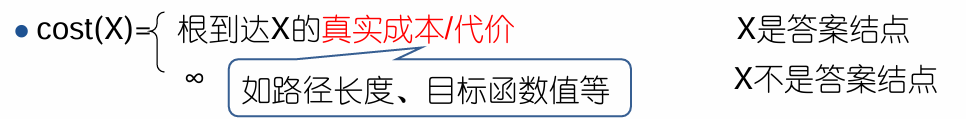
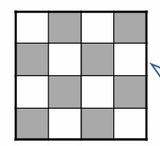
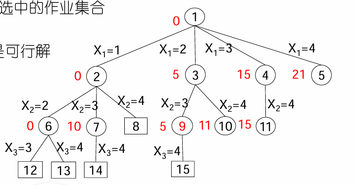
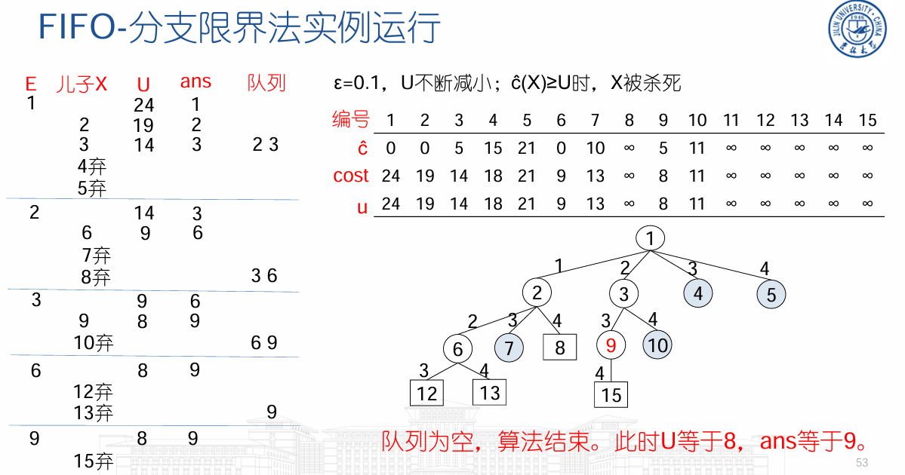

分支限界
一般方法
分支限界使用的问题特点
[!note]
清华大学出版社出版的屈婉玲等编著的《算法设计与分析》中认为：“分支限界是回溯算法的变种”
两者主要区别在于E-结点(即扩展结点)处理方式不同
- 分支限界法同样适用于求解组合数较大的问题， 特别是组合优化问题(求最优解)。
分支限界的基本思想
- 定义解空间树的结构：元组（等不等长），显式约束，隐式约束
- 检验问题的多米诺性质（可剪枝性）
- 假设当前寻找一个答案结点，按下列方式搜索解空间树：
- 如果根结点T是答案结点，输出T，操作结束；否则令T是当前扩展结点E。
- 生成E的所有儿子结点，判断每个儿子结点X：
- 如果X是答案结点，输出到根的路径，操作结束；
- 如果X满足限界函数B，则将X添加到活结点表中；否则舍弃X。
- 从活结点表中选出下一个结点成为新的E-结点，重复上述操作。如果活结点表为空，则算法以失败结束。
其中，限界函数剪枝作用：避免生成那些不包含可行解的子树。
分支限界的抽象化描述
- 伪代码
// ADD(X):将X添加到活结点表中
//LEAST(E):从活结点表中选中一个结点赋值给E，并从表中删除该结点
procedure BB(T)
if T是答案结点then 输出T; return endif
E←T
将活结点表初始化为空
loop
for E的每个儿子X do
if X是答案结点then 输出从X到T的那条路径; return; endif
if B(X) then call ADD(X);PARENT(X)←E endif
repeat
if 表中不再有活结点then print(“no answer node”); return; endif
call LEAST(E)
repeat
end BANDB
检索方式
- 根据活结点检索次序，分支限界策略可以分为
- 顺序队列：FIFO(先进先出)，活结点表采用队列实现，FIFO检索
- 优先队列：活结点依赖成本估计函数ĉ，ĉ最小/最大的活结点优先从活结点表中被选出。 活结点表采用极小堆/极大堆实现。LC检索
LC检索
LC检索的优点
- 理想状态下，对活结点表使用一个“有智力的”成本函数c来选 取下一个E-结点，从而加快到达答案结点的检索速度。
- 就是给每个活结点根据接近答案的程度设置优先级，但是只是适用于仅仅求可行解而不是全部解的情况
成本函数c
成本函数c的量化方法
- 令X是当前结点，c(X)定义为以X为根的子树中的最小成本值
- 方法1：寻找生成结点数目最少的答案结点
- 基于X在生成一个答案结点之前需要生成的结点数定义
- 方法2：寻找路径长度最短的答案结点
- 基于距离X最近的那个答案结点的路径长度定义
- 方法3：寻找使目标函数取极值的答案节点(最优解)
- 基于问题描述中的目标函数定义
本章中，问题不存在目标函数时，采用方法2定义c函数
成本函数c的定义
- 对状态空间树里的解状态结点X定义真实成本函数

- 从上帝视角对状态空间树里的任意结点X定义成本函数

[!caution]
探讨c(X)时，我们假设答案节点已经找到，检索树已经生成，一切都是在已知的情 况下进行讨论。
c(X)是节点X的真实成本函数
成本函数c的问题
- c(X)基于答案结点的真实成本定义，为求出该值，需要生成状态空间树。
- c的计算工作量与原问题具有相同的复杂度
- 转化思维，定义一个易于计算的成本估计函数ĉ，来替代c对 活结点表进行检索
成本估计函数ĉ定义
- 成本估计函数 ：ĉ(X)=f(h(X))+ ĝ(X）
- h(X)：根结点到结点X的成本
- ĝ(X)：子树X中，X到最小成本答案结点的估计成本
- f：为调整h和ĝ在成本估计函数ĉ中的影响比例而定义的非负函数
因此得出LC-检索和广度优先检索的关系
[!tip]
- ĉ(X)=f(h(X))+ ĝ(X)
- LC-检索(Least Cost search)：选取成本估计函数ĉ的值最小的活结点作为 下一个E-结点。
- BFS-检索(广度优先)：f(h(X))=根到结点X的路径长度，ĝ(X)=0。即 BFS是LC-检索的特殊情况
总结
- ĉ(X)=f(h(X))+ ĝ(X)要易于计算，且ĉ(X)≤c(X)；当叶节点X是答案节点时， c(X)=ĉ(X)
- 在LC-检索中，算法利用ĉ对活结点表进行检索。即优先选择更靠近答案 结点，同时又离根结点较近的结点
迷问题
问题描述
在一个分成16格的方形棋盘上放有15块编了号码的牌，如(a)所示，要求通过一系列合法的移动转换成(b)所示那样的目标排列，其中若当前牌邻接有空位置，则 可将牌移动到空位置

状态空间树
- 问题状态，即棋盘布局状态
- 其中初始排序a位初始状态，目标排序b为目标状态
对与棋牌每一次移动就会产生新的布局状态
- 其中当前结点X的儿子结点是X通过一次合法移动到达的布局状态
函数定义
- POSITION(i)是棋牌
i在初始状态时的位置号，1≤i≤16，POSITION(16)表示 空格的位置 - LESS(i)是牌面上
j < i且POSITION(j)>POSITION(i)的j的数目，即反序的数目
根据此有初始状态判定定理：当且仅当初始状态的∑LESS(i)+X是偶数时，图(b)所示的目标状态可由此状态到达
其中在初始状态下，如果空格在(c)的阴影 位置中，则令X=1；否则令X=0。

检索
FIFO检索:对于空格，顺序按照上右下左搜索
深度优先检索：采取由根开始的最左路径， 搜索过程中有可能远离目标
LC-检索
[!note]
定义c(X)：从初始排列到达目标排列时，棋牌最少移动次数
又ĉ(X)=f(X)+ĝ(X)，
f(X)：从初始排列到X时，棋牌已经移动的次数
ĝ(X)：不在其目标位置的非空白棋牌数目（非法棋牌数）
求最小成本的分支限界法
寻找最小成本
- BB算法中：算法一旦判断出儿子结点X是答案结点，则打印路径，操作结束
算法BB基于LC-检索寻找具有最小成本的答案结点，则ĉ要满足：
- 易于计算
- 对于每一个结点X，ĉ(X) ≤c(X)
- 对于答案结点X，有ĉ(X) = c(X)
- 追加：c(X)<c(Y)时，有ĉ(X) <ĉ(Y)难于实现，一般不需要满足
改进算法：算法从活结点表中选出E结点时，再判断E是不是答案结点，若是则打印路径，操作结束。
基于ĉ求最小成本的LC-检索算法
procedure LC(T, ĉ)//为找出最小成本答案结点
E←T, 将活结点表初始化为空
loop
if E是答案结点then 输出从E到T的那条路径; return; endif//c帽=c
for E的每个儿子X do
if B(X) then call ADD(X); PARENT(X)←E; endif
repeat
if 表中不再有活结点then print(“no answer node”); return; endif
call LEAST(E)//选择最小的c帽
repeat
end LC
- 对于活结点表中的每一个结点L，一定有ĉ(E)≤ĉ(L)。由ĉ定义知，E是答案结点时c(E)=ĉ(E)，则c(E)=ĉ(E)≤ĉ(L) ≤c(L)，也就找到最小成本节点
加速寻找最小成本
- 若发现结点X不能导致最小成本答案结点，也不必再搜索子树X，子树X被剪枝。
- 所以设置一个最小成本上界U，问题的最小成本不会大于这个上界U。如果
ĉ(X)>(/≥)U，则算法无需检索以X为根的子树。
基于ĉ和U求最小成本的分支限界法基本思想
- 对于极小化问题，把目标函数作为成本函数
- 约束条件作为约束函数B
- 问题转化为寻找解空间树中最小成本答案结点
- 设计成本估计函数ĉ(X)，ĉ(X)≤c(X)
- 还可以设计最小成本的上界U，c(X)≤U
- 基于ĉ(X)和U进行分支限界搜索，其中c帽决定遍历方向，U决定剪枝
最小成本上界U
- U是当前算法生成的所有状态结点对最小成本上界估计的最小值
- 初始无穷大，或通过启发式方法(或者贪心）得到；初值≥最小成本答案结点的成本
- 并随着结点访问缩小
- 主要作用是判断结点死活，是否剪枝
成本上界函数U(x)
- u(X)是对成本c(X)的上界估计
- u(X)可仿照ĉ(X)定义，或其他方式
- 根到X的成本
- 子树X中，X到最小成本答案节点的成本上界估计
- 易于计算，C(x)<=U(x),同时对于答案结点c(X)=u(X)
[!note]
区分函数cost,ĉ,c和u
- cost(X)：根到答案结点X的真实成本
- c(X)：子树X中所有答案结点的最小成本值， 即最小cost值
- ĉ(X)和u(X)：对子树X的c值估计，满足
ĉ(X)≤c(X)≤u(X)- 设图中，设当前每个结点都满足约束条件
- 当cost(X)>u(X)时，意味着以X为根的子树中一定有更优解。
界U的改值和剪枝
- U改值：答案结点X，
cost(X)<U时，U = cost(X);状态结点X,u(X)<U时，U = u(X)同时符号取值小者 - U剪枝：U值来自一个真实成本，ĉ(X)≥U的活结点X都可以被杀死；U值来自一个成本上界，ĉ(X)>U的所有活结点X都可以被杀死
界函数UB
- 一个足够小的正常数ε：对任意结点X,Y，如果u(X)<u(Y),u(X)<u(X)+ε<u(Y)
procedure UB(X,ε,U,ans)
//X是当前活结点，U是当前上界估计值，ans是当前最小成本的答案结点。
//结点X满足ĉ(X)≤c(X)≤u(X)；当X是答案节点时，cost(X)表示根到X的真实成本。
if ĉ(X)≥U then return false
if X是解结点 and cost(X)<U
then U←min(cost(X), u(X)+ε); ans←X
endif
else if u(X)+ε<U then U←u(X)+ε endif
return true
end UB
算法8.4 求最小成本的FIFO-分支限界算法
- 假定状态空间树T至少包含一个解结点，并且不可行结点的估计值ĉ(X)=∞
procedure FIFOBB(T,ĉ,u,ε,cost)
E←T; PARENT(E)←0; U←∞，ans←0
UB(E,ε,U,ans)
将队列初始化为空
loop
for E的每个儿子X do
if B(X) and UB(X,ε,U,ans) then call ADDQ(X); PARENT(X)←E endif
repeat
loop
if 队列为空 then print (‘least cost = ‘, U); 输出从ans到T的路径;return endif
call DELETEQ(E);
if ĉ(E) < U then exit endif//存在节点的最小估计成本小于成本上界，退出循环，处理其子节点
repeat
repeat
end FIFOBB
算法8.5 求最小成本的LC-分支限界法
- 假定状态空间树T至少包含一个解结点，不可行结点的估计值ĉ(X)=∞
- 不同于FIFO，这里将活结点表的最小估计成本组织成最小堆，每次取当前活结点表中估计成本最小的处理其子节点
procedure LCBB(T,ĉ,u,ε,cost)
//函数ADD：加一个结点到min-堆中；函数LEAST：从min-堆中删去堆顶结点
E←T; PARENT(E)←0; U←∞，ans←0
UB(E,ε,U,ans)
将活结点表初始化为空
loop
for E的每个儿子X do
if B(X) and UB(X,ε,U,ans) then call ADD(X); PARENT(X)←E endif
repeat
if 表中不再有活结点 or 堆顶结点ĉ值≥U then print (‘least cost = ‘ ,U); 输出从ans到T的那条路径; return endif
call LEAST(E)
repeat
end LCBB
极大化问题
- 将问题转化为极小化问题：取目标函数的相反数作为成本函数c
- 对照极小化问题做镜像修改：把目标函数作为成本函数c，问题转化为寻找解空间树中最大成本答案结点，此时
u(X)≤c(X)≤ĉ(X)。
总结求最优解问题的分支限界法
- 剪枝依据：约束函数B限定是否存在可行解，成本估计函数数ĉ(X)和界U界定是否存在最优解
- 剪枝发生点：
- X入活结点表时，接受B检验和U检验(判断是否可行以及是否存在最优解)
- X出活结点表时，接受U检验（判断是否存在最优解）
- 算法终止：活结点表为空；或者活结点表中再没有通过U检验的活结点
带有期限的作业调度问题
问题描述
假设有n个作业和一台处理机，每个作业i由一个三元组(pi,di,ti)表 示，表示作业需要ti个时间处理完毕，如果在期限di之前没有完成 则要交付pi的罚款。
从这n个作业中选取一个子集合J，使J中作业都能在相应的期限内完成，而不在J中的作业罚款总数最小。也就是极小化问题
解法
- 解空间表示：不定长的k-元组(X1,..Xk), k≤n
- 显示约束：作业在集合里
- 隐式约束：对于
Xj，有sum(t0,...,tj)<=dj，即所有作业在期限前完成 - 目标函数：未选中的作业罚款总数最小
- 状态空间树：2^n个结点
- 其中：圆形结点表示满足约束条件的结点；方形结点表示不可行结点
约束函数B
- k-元组表示状态空间树
- 按层次遍历为结点编号
实例： (p1,d1,t1)=(5,1,1);(p2,d2,t2)=(10,3,2);(p3,d3,t3)=(6,2,1);(p4,d4,t4)=(3,1,1)

成本估计函数ĉ
- 定义成本估计函数ĉ(X)，使得
ĉ(X)≤c(X)：- Sx是根结点到达结点X时选中的作业集合
m=max{i|i∈Sx}ĉ(X)=∑pi, 1<=i<m,i不属于Sx,若X是可行解- ĉ(X)=∞，若X是不可行解
- 实例：
(p1,d1,t1)=(5,1,1);(p2,d2,t2)=(10,3,2);(p3,d3,t3)=(6,2,1);(p4,d4,t4)=(3,1,1)

成本上界U
- 上界估计函数u(X)=∑pi, i∉Sx
- 实例：
(p1,d1,t1)=(5,1,1);(p2,d2,t2)=(10,3,2);(p3,d3,t3)=(6,2,1);(p4,d4,t4)=(3,1,1)

完整实例

货郎担问题
问题描述
- TSP问题：某售货员要到若干个城市销售货物，已知各城市之间的距离，要 求售货员从某一城市出发并选择旅行路线，使每个城市经过一次，最后回到 原出发城市，而总路程最短。
- 问题形式化描述：设G(V,E)是一个有向图，|V|=n，cij>0表示边∈E的成 本。寻找一条最小成本的周游路线，不失一般性，考虑从结点1开始，在结点1结束
动态规划方法求解的时间复杂度是Θ(n^2*2^n)
分支限界法最坏情况也是O(n^2*2^n) ，但对许多具体实例，能花费较少的时间
解
解空间
- 问题的解是S中结点的一种排列
(X1,X2,X3)，使1,X1,X2,X3,1的成本最小 - 固定长3-元组
(X1,..Xn-1)，n=4 - 显式约束：Xi属于G，且互不相同
- 隐式约束：存在周游路线1,X1,X2,X3,1，即相邻两点有边存在
- 目标函数：周游路线成本最小
- 状态空间树：共计3!个叶结点
成本函数c
成本函数c(X)：目标函数作为成本函数
- c(X)=根到X的的路径的周游路线成本，X是叶结点
- c(X)=子树X中最小成本叶结点的成本，X非叶结点
成本下界函数ĉ
成本下界函数ĉ(X) ≤ c(X)，X表示(X1,..Xk)到达的结点，ĉ(X)= f(X)+ ĝ(X)
- f(X)表示已选定的路线X0=1,X1,…Xk的成本和
- ĝ(X)表示经过剩余结点回到1的最短距离估计，具体为已选定路线最后一个点最小出边加上剩余结点出边最小值

成本上界U
成本上界U≥c(X)：当前得到的最短周游路线长度 ，其中初始值一般为贪心解
- 实例


总结
[!tip]
分支限界法与回溯法：
- 相同点：
- 同样适用于求解组合数较大的问题(/多阶段决策问题)
- 都是在解空间树上搜索答案结点
- 都会借助约束函数B进行剪枝
- 分支限界法与回溯法的不同点：
- 最本质的区别在于E-结点(即扩展结点)处理方式不同
- 存储空间上，分支限界法需要额外维护活结点表，回溯法不需要
分支限界法求极小化问题，即寻找状态空间树中最小成本的答案结点
- 目标函数作为成本函数c
- 约束条件作为约束函数B
- 设计成本估计函数ĉ(X)，ĉ(X)≤c(X)
- 设计最小成本的上界U，c(X)≤U
- 基于ĉ(X)和U进行分支限界搜索，也就是通过ĉ(X)>=U去活加速搜索
求极大化问题
- 目标函数取相反数，转化为极小化问题
- 或对照极小化问题做镜像修改